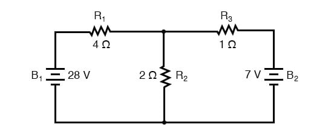
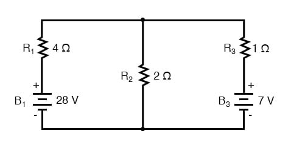
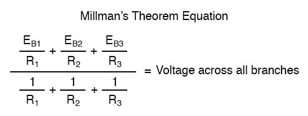
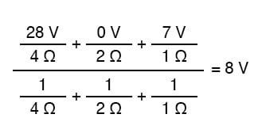
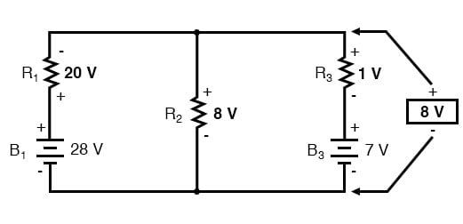
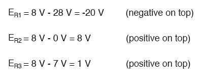
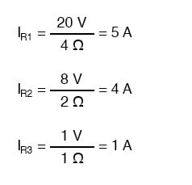
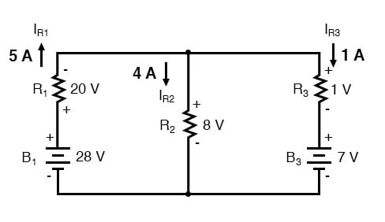

In Millman’s Theorem, the circuit is re-drawn as a parallel network of branches, each branch containing a resistor or series battery/resistor combination. Millman’s Theorem is applicable only to those circuits which can be redrawn accordingly. Here again, is our example circuit used for the last two analysis methods:

And here is that same circuit, re-drawn for the sake of applying Millman’s Theorem:

By considering the supply voltage within each branch and the resistance within each branch, Millman’s Theorem will tell us the voltage across all branches. Please note that I’ve labeled the battery in the rightmost branch as “B3” to clearly denote it as being in the third branch, even though there is no “B2” in the circuit!
Millman’s Theorem is nothing more than a long equation, applied to any circuit drawn as a set of parallel-connected branches, each branch with its own voltage source and series resistance:

Substituting actual voltage and resistance figures from our example circuit for the variable terms of this equation, we get the following expression:

The final answer of 8 volts is the voltage seen across all parallel branches, like this:

The polarity of all voltages in Millman’s Theorem is referenced to the same point. In the example circuit above, I used the bottom wire of the parallel circuit as my reference point, and so the voltages within each branch (28 for the R1 branch, 0 for the R2 branch, and 7 for the R3 branch) were inserted into the equation as positive numbers. Likewise, when the answer came out to 8 volts (positive), this meant that the top wire of the circuit was positive with respect to the bottom wire (the original point of reference). If both batteries had been connected backward (negative end up and positive ends down), the voltage for branch 1 would have been entered into the equation as -28 volts, the voltage for branch 3 as -7 volts, and the resulting answer of -8 volts would have told us that the top wire was negative with respect to the bottom wire (our initial point of reference).
To solve for resistor voltage drops, the Millman voltage (across the parallel network) must be compared against the voltage source within each branch, using the principle of voltages adding in series to determine the magnitude and polarity of the voltage across each resistor:

To solve for branch currents, each resistor voltage drop can be divided by its respective resistance (I=E/R):

The direction of current through each resistor is determined by the polarity across each resistor, not by the polarity across each battery, as the current can be forced back through a battery, as is the case with B3 in the example circuit. This is important to keep in mind since Millman’s Theorem doesn’t provide as direct an indication of “wrong” current direction as does the Branch Current or Mesh Current methods. You must pay close attention to the polarities of resistor voltage drops as given by Kirchhoff’s Voltage Law, determining the direction of currents from that.

Millman’s Theorem is very convenient for determining the voltage across a set of parallel branches, where there are enough voltage sources present to preclude solution via regular series-parallel reduction method. It also is easy in the sense that it doesn’t require the use of simultaneous equations. However, it is limited in that it only applied to circuits which can be re-drawn to fit this form. It cannot be used, for example, to solve an unbalanced bridge circuit. And, even in cases where Millman’s Theorem can be applied, the solution of individual resistor voltage drops can be a bit daunting to some, the Millman’s Theorem equation only providing a single figure for branch voltage.
As you will see, each network analysis method has its own advantages and disadvantages. Each method is a tool, and there is no tool that is perfect for all jobs. The skilled technician, however, carries these methods in his or her mind like a mechanic carries a set of tools in his or her toolbox. The more tools you have equipped yourself with, the better prepared you will be for any eventuality.
REVIEW: